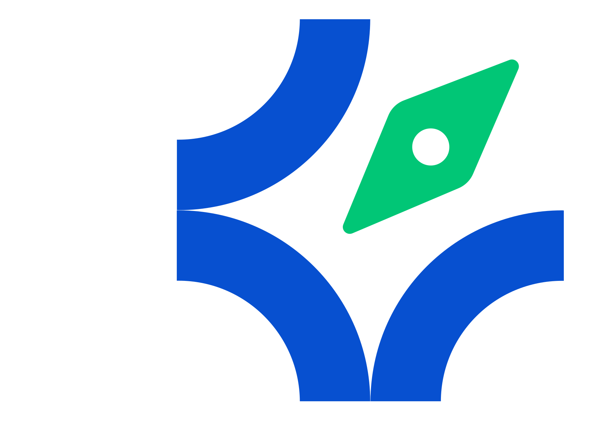
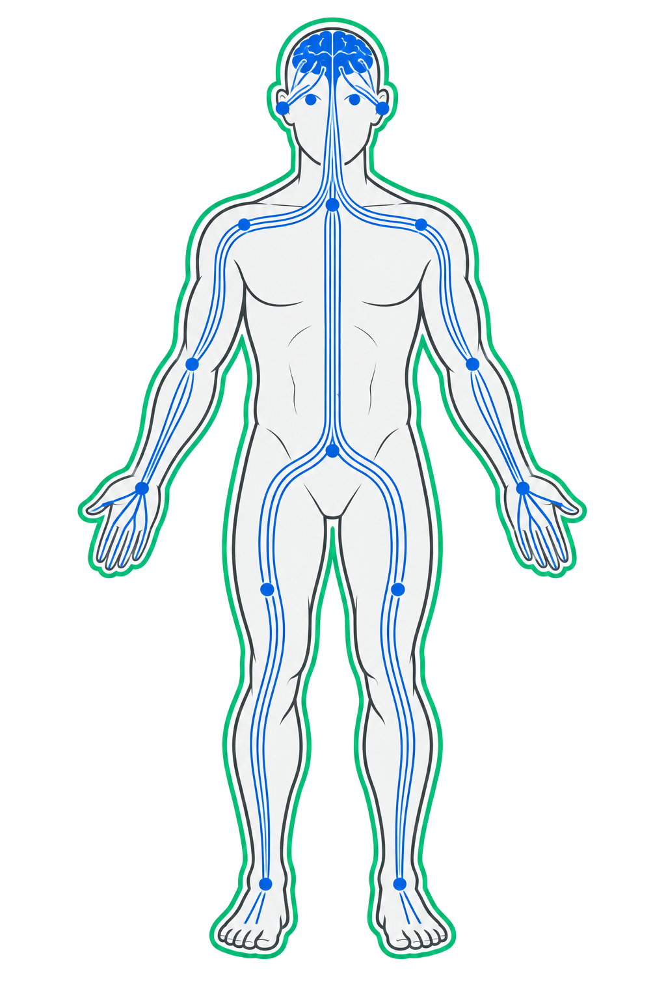
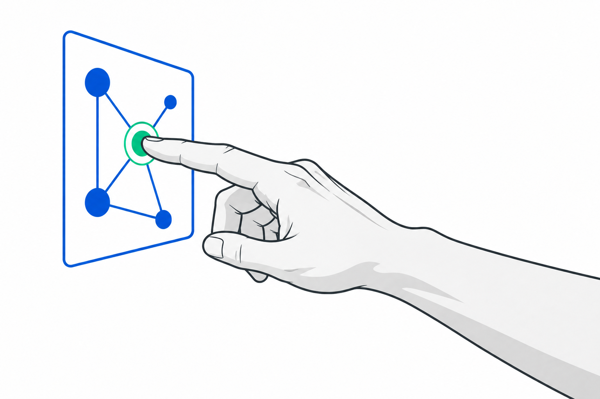

Pass 1 · bare prompt
Give me five social media campaign ideas for NUGES.

AI works inside a system, not by itself.

INPUTSMODELCONTEXTGUARDRAILSSystems analogy. Biology explains roles and information flow only. AI is not alive, conscious, emotional, biological, or equivalent to a human being.
Factual caution. If the room cannot verify a claim, mark it Source required or Decide in the room. Do not guess.
Commit first. The answer stays closed until the room has chosen.
Prompt engineering shapes the request. Context engineering shapes the working situation around the request.
A question enters. A generic output leaves.
Facts, examples, constraints, memory, and permissions circulate.
Unknown is not a blank. Name the evidence, decision, owner, or approval needed next.
Give me five social media campaign ideas for NUGES.
You are helping with a low-risk draft for NUGES Media. Use only supplied verified public facts. Draft three content ideas. Do not invent services, clients, results, prices, staff, or claims. For every missing or uncertain detail, do not guess. Classify it as one of: Source required: [claim or fact]; Decision required: [question the room must answer]; Owner required: [person or role]; Approval required: [action and approver]. Record the next action beside the unresolved item.
Using the shared NUGES organizational context and approved public sources, draft three low-risk content ideas. Show the source basis. For every unresolved item, classify it as Source required, Decision required, Owner required, or Approval required, and record the next action. Draft only. Do not publish or invent facts.
Hand off from the collective body to your own context engine.

Interview me about my role, responsibilities, goals, recurring tasks, audiences, preferences, outputs, quality rules, privacy boundaries, decision rules, and one low-risk test task. Ask, do not guess. Do not guess organization-wide details. Classify each unresolved item as Source required, Decision required, Owner required, or Approval required, and record the next action. Assemble my personal context engine v1 and ask me to correct anything untrue before saving.
Your task is the body.
Your context is the circulation.
Your judgment is the boundary.